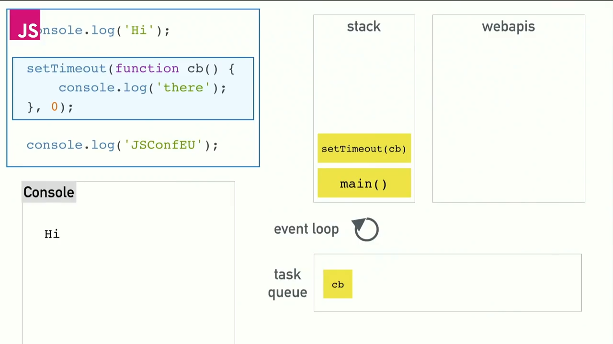
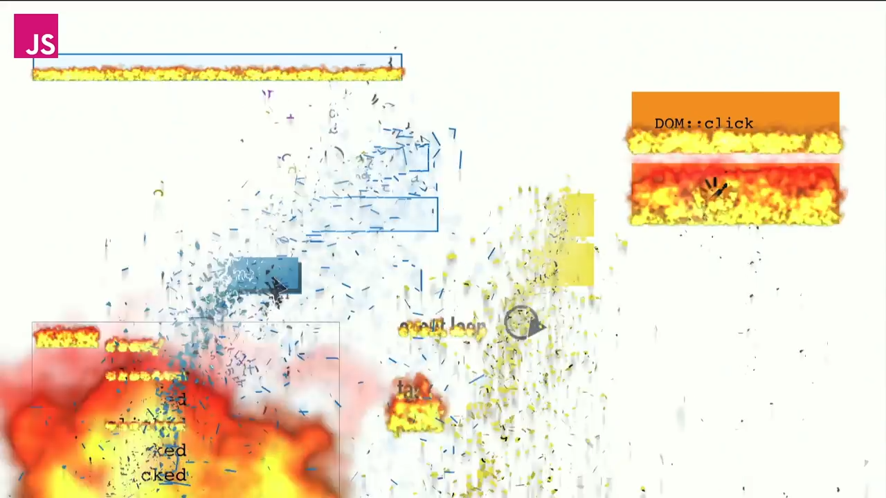

vs
Infinite promises
The Event Loop
@erinjzimmer
The story so far...
what the heck is the event loop anyway?
@philip_roberts

what the heck is the event loop anyway?
@philip_roberts

stack
setTimeout(cb)
main()
webapis
task queue
cb
Webworkers
It's a little more complicated than that...
The Rendering Pipeline
DemoLong running tasks can make your page run like...
It's a little more complicated than that...
An event loop has one or more task queues.
bool did_work = delegate->DoWork();
if (!keep_running_)
break;
did_work |= delegate->DoDelayedWork(&delayed_work_time_);
if (!keep_running_)
break;
if (did_work)
continue;
did_work = delegate->DoIdleWork();
if (!keep_running_)
break;
- Queues can be executed in any order
- Tasks in the same queue must be executed in the order they arrived
- Tasks from the same source must go in the same queue
It's a little more complicated than that...
Microtasks
Image by Pete Markham
Demo
It's a little more complicated than that...
Request Animation Frame Queue
requestAnimationFrame(callback);
requestAnimationFrame(() => {
this.browser.classList.remove('go');
requestAnimationFrame(() => {
this.browser.classList.add('go');
});
});
this.browser.classList.remove('go');
this.browser.classList.add('go');
 Demo
Demo
... but what about Node?
- No script parsing events
- No pesky user interactions
- No animation frame callbacks
- No rendering pipeline at all


setImmediate(callback)setTimeout(callback, 0)setImmediate(callback)process.nextTick(callback)setImmediate():do something on the next tick
process.nextTick():do something immediately
Web workers
stack
setTimeout(cb)
main()
webapis
task queue
cb
stack
webapis
task queue
cb
stack
webapis
task queue
cb
- No script tags
- No user interactions
- No request animation frames
- No rendering pipeline

Long running tasks will make your web page run like a wonky cat
Promises and nextTick callbacks get special treatment
Use requestAnimationFrame to fine-tune your animations
The event loop is more exciting than you could possibly have imagined
@erinjzimmer
https://ejzimmer.github.io/event-loop-talk